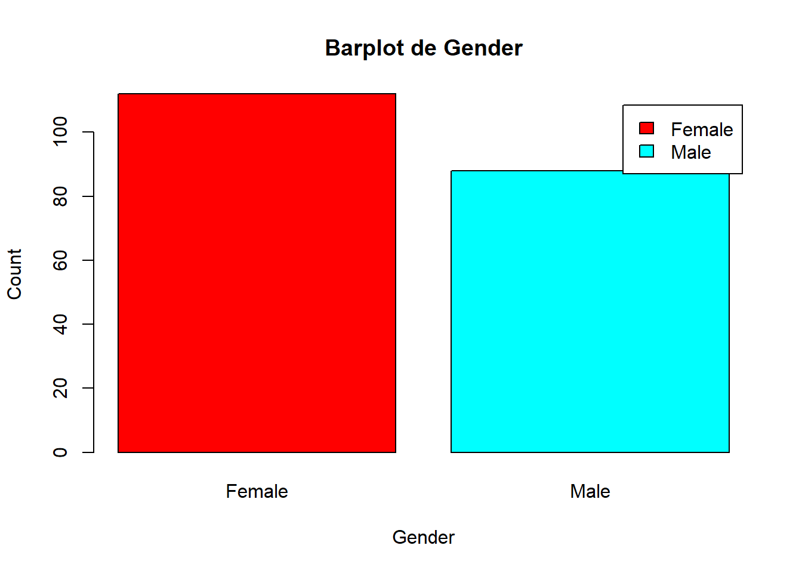
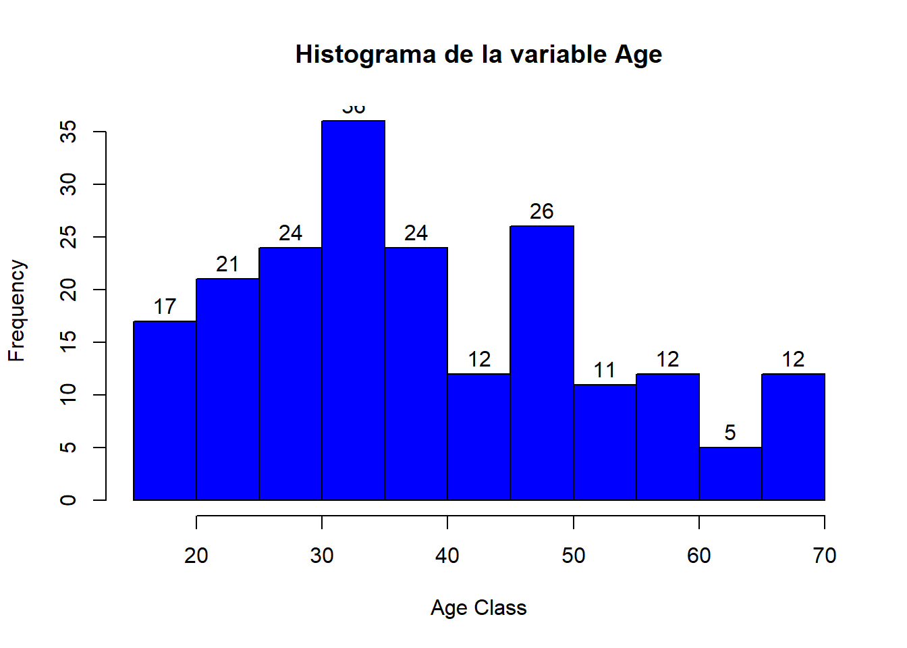
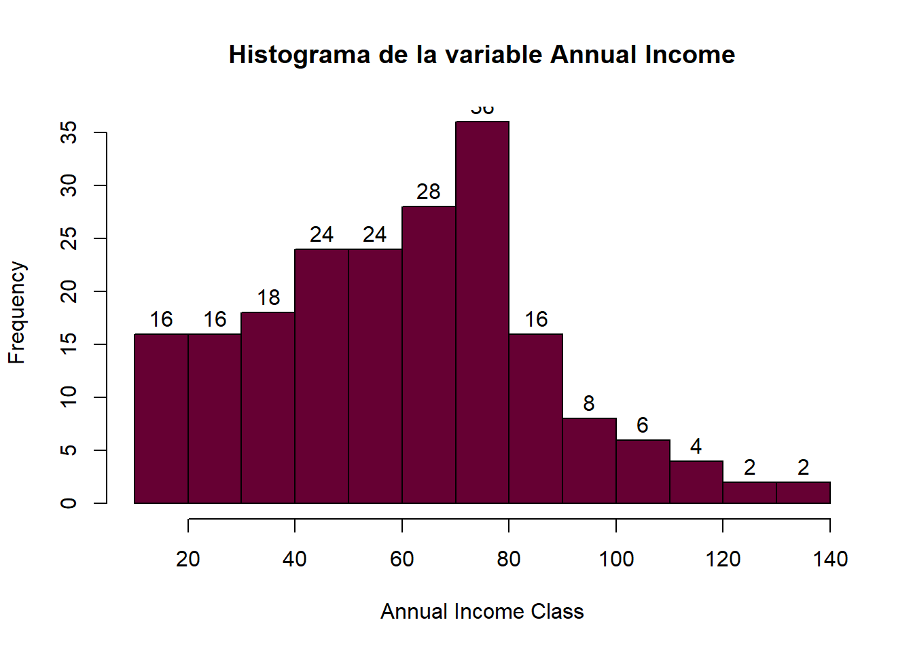

# Carga de paquetes necesariosknitr::opts_chunk$set(echo =TRUE)knitr::opts_chunk$set(message =FALSE)knitr::opts_chunk$set(warning =FALSE)library(tidyverse)
Warning: package 'tidyverse' was built under R version 4.3.3
Warning: package 'ggplot2' was built under R version 4.3.3
Warning: package 'tibble' was built under R version 4.3.3
Warning: package 'tidyr' was built under R version 4.3.3
Warning: package 'readr' was built under R version 4.3.3
Warning: package 'purrr' was built under R version 4.3.3
Warning: package 'dplyr' was built under R version 4.3.3
Warning: package 'stringr' was built under R version 4.3.3
Warning: package 'forcats' was built under R version 4.3.3
Warning: package 'lubridate' was built under R version 4.3.3
Proyecto de segmentación de clientes en R
La segmentación de clientes es una de las aplicaciones más importantes del aprendizaje no supervisado. Utilizando técnicas de clustering, las empresas pueden identificar los distintos segmentos de clientes, lo que les permite dirigirse a la base de usuarios potenciales.
La segmentación de clientes es el proceso de división de la base de clientes en varios grupos de individuos que comparten similitudes de diferentes maneras que son relevantes para el marketing, como género, edad, intereses y hábitos de gasto diversos.
¿Hay igual cantidad de consumidores de género femenino y masculino?
Código
a=table(customer_data$Gender)barplot(a,main="Barplot de Gender",ylab="Count",xlab="Gender",col=rainbow(2),legend=rownames(a))

¿Cómo se distribuyen las edades de los consumidores?
Código
hist(customer_data$Age,col="blue",main="Histograma de la variable Age",xlab="Age Class",ylab="Frequency",labels=TRUE)

¿Cómo se distribuye la variable Annual income?
Código
summary(customer_data$`Annual Income (k$)`)
Min. 1st Qu. Median Mean 3rd Qu. Max.
15.00 41.50 61.50 60.56 78.00 137.00
Código
hist(customer_data$`Annual Income (k$)`,col="#660033",main="Histograma de la variable Annual Income",xlab="Annual Income Class",ylab="Frequency",labels=TRUE)

¿Hay diferencia entre los ingresos por género?
Código
boxplot(`Annual Income (k$)`~Gender,data=customer_data,xlab="Género",ylab="Annual Income",col="orange",border="brown")
---title: "Aprendizaje No supervisado"author: "Pamela E. Pairo"lang: esdescription: | Trabajo Práctico n°4format: html: theme: flatly code-fold: show code-tools: true toc: true toc-location: left---```{r, message=FALSE}# Carga de paquetes necesariosknitr::opts_chunk$set(echo = TRUE)knitr::opts_chunk$set(message = FALSE)knitr::opts_chunk$set(warning = FALSE)library(tidyverse)```# Proyecto de segmentación de clientes en RLa segmentación de clientes es una de las aplicaciones más importantes del aprendizaje no supervisado. Utilizando técnicas de _clustering_, las empresas pueden identificar los distintos segmentos de clientes, lo que les permite dirigirse a la base de usuarios potenciales.La segmentación de clientes es el proceso de división de la base de clientes en varios grupos de individuos que comparten similitudes de diferentes maneras que son relevantes para el marketing, como género, edad, intereses y hábitos de gasto diversos.Se carga la base de datos```{r}customer_data <-read_csv('Mall_Customers.csv')glimpse(customer_data)```## Análisis exploratorio¿Hay igual cantidad de consumidores de género femenino y masculino?```{r}a=table(customer_data$Gender)barplot(a,main="Barplot de Gender",ylab="Count",xlab="Gender",col=rainbow(2),legend=rownames(a))```¿Cómo se distribuyen las edades de los consumidores?```{r}hist(customer_data$Age,col="blue",main="Histograma de la variable Age",xlab="Age Class",ylab="Frequency",labels=TRUE)```¿Cómo se distribuye la variable `Annual income`?```{r}summary(customer_data$`Annual Income (k$)`)hist(customer_data$`Annual Income (k$)`,col="#660033",main="Histograma de la variable Annual Income",xlab="Annual Income Class",ylab="Frequency",labels=TRUE)```¿Hay diferencia entre los ingresos por género?```{r}boxplot(`Annual Income (k$)`~Gender,data=customer_data,xlab="Género",ylab="Annual Income",col="orange",border="brown")```## Kmeans### Método del codo```{r}library(factoextra)library(Rtsne)fviz_nbclust(customer_data[,3:5], kmeans, method ="wss")```### Silhouette```{r}fviz_nbclust(customer_data[,3:5], kmeans, method ="silhouette")``````{r}knitr::opts_chunk$set(warning =FALSE)k4 <-kmeans(customer_data[,3:5], centers =4)k5 <-kmeans(customer_data[,3:5], centers =5)k6 <-kmeans(customer_data[,3:5], centers =6)k7 <-kmeans(customer_data[,3:5], centers =7)# plots to comparep1 <-fviz_cluster(k4, geom ="point", data = customer_data[,3:5]) +ggtitle("k = 4")p2 <-fviz_cluster(k5, geom ="point", data =customer_data[,3:5]) +ggtitle("k = 5")p3 <-fviz_cluster(k6, geom ="point", data =customer_data[,3:5]) +ggtitle("k = 6")p4 <-fviz_cluster(k7, geom ="point", data =customer_data[,3:5]) +ggtitle("k = 7")library(gridExtra)grid.arrange(p1, p2, p3, p4, nrow =2)```## PCA```{r}res.pca <-prcomp(customer_data[,3:5], scale =TRUE)names (res.pca)````center`:contienen la media de las variables previa estandarización (en la escala original)`scale`: contienen desviación típica de las variables previa estandarización (en la escala original)`rotation`: contiene los loadings```{r}fviz_pca_biplot(res.pca, repel =TRUE,col.var ="black", palette =c("#00AFBB", "#FC4E07"),legend.title =" ",label ="var"# Variables color)``````{r}library(ggfortify)autoplot(res.pca, data = k6, colour ='cluster',loadings =TRUE, loadings.colour ='black',loadings.label =TRUE, loadings.label.size =3)``````{r}# Eigenvalueseig.val <-get_eigenvalue(res.pca)eig.val# Resultados por variablesres.var <-get_pca_var(res.pca)res.var$coord # Coordenadasres.var$contrib # Contribución a los CP# Resultados por individuosres.ind <-get_pca_ind(res.pca)res.ind$coord # Coordenadas```# Porcentaje de explicación de cada variable```{r}fviz_eig(res.pca)```# T-SNE``` rinstall.packages("Rtsne") # Install Rtsne package from CRAN``````{r}tsne <-Rtsne(customer_data[,3:5],dim =2, perplexity=10, max_iter =500)``````{r}plot(tsne$Y, t='n', main="tSNE", xlab="tSNE dimension 1", ylab="tSNE dimension 2", "cex.main"=2, "cex.lab"=1.5)text(tsne$Y, labels=k6$cluster)```